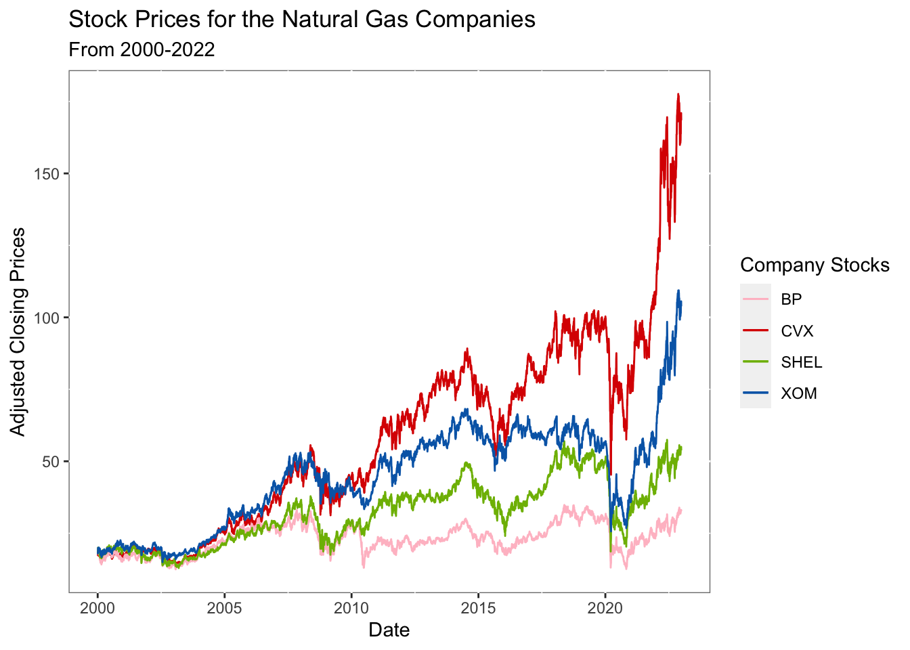
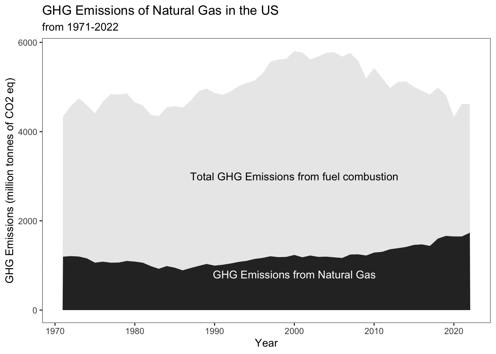
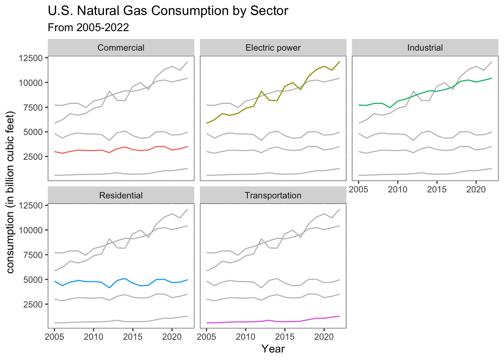

This section delves into the data retrieved from the specified data sources tab. To gain a thorough understanding of the dataset, various visualization techniques will be employed, providing diverse perspectives and insights into the underlying patterns and relationships within the data.
Natural Gas Company Stocks
View Code
library(quantmod)library(ggplot2)library(plotly)options("getSymbols.warning4.0"=FALSE)options("getSymbols.yahoo.warning"=FALSE)tickers =c("CVX","BP","SHEL","XOM")for (i in tickers){getSymbols(i,from ="2000-01-02",to ="2022-12-29")}x <-list(title ="date")y <-list(title ="value")stock <-data.frame(CVX$CVX.Adjusted, BP$BP.Adjusted, SHEL$SHEL.Adjusted, XOM$XOM.Adjusted)stock <-data.frame(stock,rownames(stock))colnames(stock) <-append(tickers,'Dates')stock$date<-as.Date(stock$Dates,"%Y-%m-%d")################################################ggplot(stock, aes(x=date)) +geom_line(aes(y=CVX, colour="CVX"))+geom_line(aes(y=BP, colour="BP"))+geom_line(aes(y=SHEL, colour="SHEL"))+geom_line(aes(y=XOM, colour="XOM"))+labs(title ="Stock Prices for the Natural Gas Companies",subtitle ="From 2000-2022",x ="Date",y ="Adjusted Closing Prices")+theme(panel.background =element_rect(fill ="white", colour ="grey50"))+guides(colour=guide_legend(title="Company Stocks")) +scale_color_manual(values =c("CVX"="#db0000", "BP"="pink","SHEL"="#7eb900", "XOM"="#0068b5"),name ="Natural Gas Companies")

The graph shows the stock prices of various natural gas companies over a period from 2000 to 2022 indicating the adjusted closing prices of the company stocks. Overall stocks seem to follow a somewhat correlated pattern, indicating possible market or sector-wide influences. There’s a noticeable peak and sharp decline around the year 2020 for one stock in particular, which could correspond with market volatility during the COVID-19 pandemic. Some stocks display more volatility than others, with more frequent and pronounced peaks and troughs.
Trade Dynamics
Exports
This visualization presents a dual-axis chart tracking U.S. natural gas exports alongside the export prices from 1997 to 2022. One axis represents the volume of exports, while the second axis displays the price. The chart illustrate the relationship between the quantity of exports and their market prices over time. The visualization shows an upward trend in the price of natural gas, while the export volumes fluctuate over the same period. This could suggest that even though the quantity of exports is not steadily increasing, the demand or other market factors are driving prices higher.
Imports
This visualization presents a dual-axis chart tracking U.S. natural gas imports alongside the import prices from 1997 to 2022. One axis represents the volume of imports, while the second axis displays the price. The chart illustrate the relationship between the quantity of imports and their market prices over time. The visualization shows fluctuations in the price of natural gas till 2020 where it dipped to minimum due to COVID-19 pandamic. The import volumes shows downward trend. This could suggest that even though the quantity of imports is not steadily increasing, the demand or other market factors are driving prices higher.
Exports vs Imports
Natural gas exports were less than imports until 2017, and then exports exceeded imports, it likely reflects a significant shift in the U.S. energy market. Around that time, the U.S. natural gas industry experienced a boom due to advances in extraction technology like fracking, which led to increased production and enabled the U.S. to become a net exporter of natural gas. This visualization illustrates the transition of the U.S. from a net importer to a net exporter of natural gas.
ghg_df<-read.csv("datasets/Book3.csv")q<-ggplot(ghg_df) +geom_area(aes(x = Year, y = natural.gas),fill =1, alpha =0.85) +geom_area(aes(x = Year, y = Total.GHG..emissions.from.fuel.combustion),fill =1, alpha =0.1)+annotate("text", x =2000, y =800, label ="GHG Emissions from Natural Gas", color="white") +annotate("text", x =2000, y =3000, label ="Total GHG Emissions from fuel combustion", color="black") +labs(title ="GHG Emissions of Natural Gas in the US ",subtitle ="from 1971-2022",x ="Year",y ="GHG Emissions (million tonnes of CO2 eq)")+theme(panel.background =element_rect(fill ="white", colour ="grey50"),panel.border =element_rect(colour ="grey50", fill=NA, size=0.5))q

The graph illustrates greenhouse gas (GHG) emissions related to natural gas in the U.S. from 1971 to 2022. The chart shows two layers, with one representing the total GHG emissions from fuel combustion and the other specifically for natural gas, we can observe the significant natural gas is on the overall emissions. Although the trends is constant over time, the emissions from natural gas have been slightly increasing since 2017 which makes sense as the production of natural gas in the U.S. is increasing since 2017 , and moreover the proportion of natural gas-related emissions remained constant over the years even when the total from all fuel combustion was increasing around 2000s.
Natural Gas Prices
View Code
prices_df<-read.csv("datasets/Book4.csv")s<-ggplot(prices_df, aes(x = Year)) +geom_line(aes(y = Residential, color ="Residential"), size =0.5) +geom_line(aes(y = Industrial, color ="Industrial"), size =0.5) +geom_line(aes(y = Commercial, color ="Commercial"), size =0.5) +geom_line(aes(y = Electric.Power.Price, color ="Electric Power"), size =0.5) +labs(title =paste("U.S. Natural Gas Prices by Sector from 1997 to 2023"),x ="Year",y ="Price (Dollars per Thousand Cubic Feet)",color ="Sector"# Label for the legend ) +scale_color_manual(values =c("Residential"="darkred", "Industrial"="steelblue","Commercial"="green","Electric Power"="purple")) +theme(panel.background =element_rect(fill ="white", colour ="grey50"),panel.border =element_rect(colour ="grey50", fill =NA, size =0.5))ggplotly(s)
This plot appears to show the U.S. natural gas prices by sector from 1997 to 2023. It tracks the price trends in four different sectors: Residential, Industrial, Commercial, and Electric Power. Residential sector consistently pays the most for natural gas while electric power sector pays least for natural gas, any periods of sharp price increases or decreases, and the relative volatility of prices in each sector. The prices of natural gas across shows a sudden rise in 2008 while a fall in 2020 due to Covid-19 across all sectors. Currently, eventhough the production and consumption of natural gas is increasing the prices have decreased.
prod_consump_df<-read.csv("datasets/Book5.csv")fig <-plot_ly(prod_consump_df, x =~Year)fig <- fig %>%add_lines(y =~Consumption, name ="Consumption", text =~paste("Year:", Year, "<br>Consumption:", Consumption),hoverinfo ="text")fig <- fig %>%add_lines(y =~Production, name ="Production", visible = F,text =~paste("Year:", Year, "<br>Production:", Production),hoverinfo ="text")fig <- fig %>%layout(title =paste("U.S. Natural Gas Consumption/Production", "<br><sub>From 2005 to 2022</sub>"),yaxis =list(title ="Consumption (in trillion cubic feet)"),updatemenus =list(list(y =1.1,buttons =list(list(method ="update",args =list(list(visible =list(TRUE, FALSE)),list(yaxis =list(title ="Consumption (in trillion cubic feet)"))),label ="Consumption"),list(method ="update",args =list(list(visible =list(FALSE,TRUE)),list(yaxis =list(title ="Production (in billion cubic meters)"))),label ="Production") ) ) ) )fig
Consumption of natural gas in the United States amounted to 32.26 trillion cubic feet in 2022. This was a record high, up from 30.65 trillion cubic feet the previous year. Natural gas consumption increased consistently from 2009 to 2019, after over a decade of fluctuation from 1995 to 2008, before decreasing during the COVID-19 pandemic.Similarly, production of natural gas in the United States has increased consistently from 2009 to 2019, after over a decade of fluctuation from 1995 to 2008, before decreasing during the COVID-19 pandemic.
View Code
consump_sec_df<-read.csv("datasets/Book6.csv")consump_sec_df$sector1 <- consump_sec_df$sectordf2 <- dplyr::select(consump_sec_df, -sector)ggplot(consump_sec_df, aes(x = Year, y = consumption, group=sector)) +geom_line(data=df2, aes(x = Year, y = consumption, group=sector1), colour="grey")+geom_line(aes(colour = sector),show.legend =FALSE) +xlab("Year")+ylab("consumption (in billion cubic feet)")+theme(panel.background =element_rect(fill ="white", colour ="grey50"),panel.border =element_rect(colour ="grey50", fill=NA, size=0.5))+labs(title ="U.S. Natural Gas Consumption by Sector",subtitle ="From 2005-2022")+facet_wrap(~sector)

From the graph we can see that natural gas is typically used in the United States to generate electricity. As a result, the electric power sector is responsible for the largest share of natural gas consumption in the U.S., followed closely by the industrial sector. Consumption of natural gas by the electric power sector has doubled since 2005, but remained lower than industrial sector consumption until 2012.
The visualization shows the distribution of the workforce by gender and age in Natural gas distribution industry. The workforce of Natural gas distribution industry in 2021 was 124,009 people, with 21.4% woman, and 78.6% men highlighting a significant gender disparity in the industry. This disparity points to a broader conversation about gender representation in the energy sector, potentially indicating underlying challenges in workforce diversity and inclusion within this field.
View Code
import pandas as pdimport plotly.graph_objects as goemp_df = pd.read_csv('datasets/employment_by_location.csv')#GET UNIQUE VALUESyears = emp_df["Year"].unique()#INITIALIZE GRAPH OBJECTfig = go.Figure()#DEFINE TRACES FOR ALL POSSIBLE CASESfor year in years: df_year = emp_df.query(f"Year == {year}") fig.add_trace( go.Choropleth( locations=df_year['Code'], # Spatial coordinates z=df_year['Total Population'].astype(float), # Data to be color-coded zmin=1000, # Set the minimum value for the color bar zmax=16000, # Set the maximum value for the color bar locationmode ='USA-states', # set of locations match entries in `locations` text=df_year.apply(lambda df_year: f"Year: {df_year['Year']}<br>State: {df_year['State']}<br>Workforce: {df_year['Total Population']}", axis=1), #hovertext hoverinfo="text", colorscale ='Greens', colorbar_title="Workforce", visible=False ) ) #MAKE FIRST TRACE VISABLEfig.data[0].visible =True# Create and add slidersteps = []for i inrange(len(fig.data)): step =dict( method="update", args=[{"visible": [False] *len(fig.data)}, {"title": "U.S. Natural Gas Distribution Employment by Location in "+str(2021-i)}], # layout attribute label=str(2021-i) ) step["args"][0]["visible"][i] =True# Toggle i'th trace to "visible" steps.append(step)#DEFINE SLIDERSsliders = [dict( active=10, currentvalue={"prefix": "Year: "}, pad={"t": 50}, steps=steps)]fig.update_layout( sliders=sliders)fig.update_layout( title_text ='U.S. Natural Gas Distribution Workforce by Location in 2021', geo_scope='usa', # limite map scope to USA)fig.update_layout(template="plotly_white")fig['layout']['sliders'][0]['pad']=dict(r=1, t=1,)fig.write_html("emp_viz.html")fig.show()
This map shows the states in the United States shaded by workforce for Natural gas distribution Industry. The states that concentrated the largest workforce in 2021 were Texas (14.9k), California (11.8k), and Pennsylvania (10.5k), indicating these states as major hubs for this sector in the U.S. This concentration could be tied to its large population, hot climate and extensive industrial sector, and the state depends on reliable and affordable energy.
View Code
wage_df<-read.csv("datasets/Yearly Wage Ranking.csv")t <-ggplot(wage_df, aes(x = Year, y = Average.Wage))+geom_bar(stat ="identity", fill ="#92c54b") +labs(title =paste("U.S. Natural Gas Distribution Workforce Yearly Wage From 2014-2021"), x ="Year",y ="Average Annual Wage")+theme(panel.background =element_rect(fill ="white", colour ="grey50"),panel.border =element_rect(colour ="grey50", fill =NA, size =0.5),)ggplotly(t)
The graph shows the average annual wages in the natural gas distribution industry from 2014-2021. The plot is showing an increasing trend. In 2021, Natural gas distribution Industry had an average annual wage of $86,281, $26,686 more than the average national salary of $59,596.Looking at the graph we can say that the Natural Gas Distribution industry offers competitive wages that have consistently increased over the analyzed period (2014-2021). This upward trend suggests a positive economic outlook or growing value in the industry. Additionally, the fact that the industry’s average wage substantially exceeds the national average indicates the industry’s potential attractiveness to job seekers due to its higher compensation levels.
Source Code
---title: "Data Visualization"format: html: page-layout: full code-tools: true code-summary: "View Code" code-copy: truesidebar: analysis---This section delves into the data retrieved from the specified data sources tab. To gain a thorough understanding of the dataset, various visualization techniques will be employed, providing diverse perspectives and insights into the underlying patterns and relationships within the data.## Natural Gas Company Stocks```{r }#| warning: false#| code-fold: truelibrary(quantmod)library(ggplot2)library(plotly)options("getSymbols.warning4.0"=FALSE)options("getSymbols.yahoo.warning"=FALSE)tickers =c("CVX","BP","SHEL","XOM")for (i in tickers){getSymbols(i,from ="2000-01-02",to ="2022-12-29")}x <-list(title ="date")y <-list(title ="value")stock <-data.frame(CVX$CVX.Adjusted, BP$BP.Adjusted, SHEL$SHEL.Adjusted, XOM$XOM.Adjusted)stock <-data.frame(stock,rownames(stock))colnames(stock) <-append(tickers,'Dates')stock$date<-as.Date(stock$Dates,"%Y-%m-%d")################################################ggplot(stock, aes(x=date)) +geom_line(aes(y=CVX, colour="CVX"))+geom_line(aes(y=BP, colour="BP"))+geom_line(aes(y=SHEL, colour="SHEL"))+geom_line(aes(y=XOM, colour="XOM"))+labs(title ="Stock Prices for the Natural Gas Companies",subtitle ="From 2000-2022",x ="Date",y ="Adjusted Closing Prices")+theme(panel.background =element_rect(fill ="white", colour ="grey50"))+guides(colour=guide_legend(title="Company Stocks")) +scale_color_manual(values =c("CVX"="#db0000", "BP"="pink","SHEL"="#7eb900", "XOM"="#0068b5"),name ="Natural Gas Companies")```The graph shows the stock prices of various natural gas companies over a period from 2000 to 2022 indicating the adjusted closing prices of the company stocks. Overall stocks seem to follow a somewhat correlated pattern, indicating possible market or sector-wide influences. There's a noticeable peak and sharp decline around the year 2020 for one stock in particular, which could correspond with market volatility during the COVID-19 pandemic. Some stocks display more volatility than others, with more frequent and pronounced peaks and troughs.## Trade Dynamics### Exports```{=html}<div class='tableauPlaceholder' id='viz1710268172884' style='position: relative'><noscript><a href='#'><img alt='U.S. Natural Gas ExportsFrom 1997 to 2022 ' src='https://public.tableau.com/static/images/U_/U_S_NaturalGasExports/Sheet1/1_rss.png' style='border: none' /></a></noscript><object class='tableauViz' style='display:none;'><param name='host_url' value='https%3A%2F%2Fpublic.tableau.com%2F' /> <param name='embed_code_version' value='3' /> <param name='site_root' value='' /><param name='name' value='U_S_NaturalGasExports/Sheet1' /><param name='tabs' value='no' /><param name='toolbar' value='yes' /><param name='static_image' value='https://public.tableau.com/static/images/U_/U_S_NaturalGasExports/Sheet1/1.png' /> <param name='animate_transition' value='yes' /><param name='display_static_image' value='yes' /><param name='display_spinner' value='yes' /><param name='display_overlay' value='yes' /><param name='display_count' value='yes' /><param name='language' value='en-US' /></object></div> <script type='text/javascript'> var divElement = document.getElementById('viz1710268172884'); var vizElement = divElement.getElementsByTagName('object')[0]; vizElement.style.width='100%';vizElement.style.height=(divElement.offsetWidth*0.75)+'px'; var scriptElement = document.createElement('script'); scriptElement.src = 'https://public.tableau.com/javascripts/api/viz_v1.js'; vizElement.parentNode.insertBefore(scriptElement, vizElement); </script>```This visualization presents a dual-axis chart tracking U.S. natural gas exports alongside the export prices from 1997 to 2022. One axis represents the volume of exports, while the second axis displays the price. The chart illustrate the relationship between the quantity of exports and their market prices over time. The visualization shows an upward trend in the price of natural gas, while the export volumes fluctuate over the same period. This could suggest that even though the quantity of exports is not steadily increasing, the demand or other market factors are driving prices higher.### Imports```{=html}<div class='tableauPlaceholder' id='viz1710268831955' style='position: relative'><noscript><a href='#'><img alt='U.S. Natural Gas ImportsFrom 1997 to 2022 ' src='https://public.tableau.com/static/images/U_/U_S_naturalgasimports/Sheet2/1_rss.png' style='border: none' /></a></noscript><object class='tableauViz' style='display:none;'><param name='host_url' value='https%3A%2F%2Fpublic.tableau.com%2F' /> <param name='embed_code_version' value='3' /> <param name='site_root' value='' /><param name='name' value='U_S_naturalgasimports/Sheet2' /><param name='tabs' value='no' /><param name='toolbar' value='yes' /><param name='static_image' value='https://public.tableau.com/static/images/U_/U_S_naturalgasimports/Sheet2/1.png' /> <param name='animate_transition' value='yes' /><param name='display_static_image' value='yes' /><param name='display_spinner' value='yes' /><param name='display_overlay' value='yes' /><param name='display_count' value='yes' /><param name='language' value='en-US' /></object></div> <script type='text/javascript'> var divElement = document.getElementById('viz1710268831955'); var vizElement = divElement.getElementsByTagName('object')[0]; vizElement.style.width='100%';vizElement.style.height=(divElement.offsetWidth*0.75)+'px'; var scriptElement = document.createElement('script'); scriptElement.src = 'https://public.tableau.com/javascripts/api/viz_v1.js'; vizElement.parentNode.insertBefore(scriptElement, vizElement); </script>```This visualization presents a dual-axis chart tracking U.S. natural gas imports alongside the import prices from 1997 to 2022. One axis represents the volume of imports, while the second axis displays the price. The chart illustrate the relationship between the quantity of imports and their market prices over time. The visualization shows fluctuations in the price of natural gas till 2020 where it dipped to minimum due to COVID-19 pandamic. The import volumes shows downward trend. This could suggest that even though the quantity of imports is not steadily increasing, the demand or other market factors are driving prices higher.### Exports vs Imports```{=html}<div class='tableauPlaceholder' id='viz1710268533016' style='position: relative'><noscript><a href='#'><img alt='U.S. Natural Gas Imports vs ExportsFrom 1975 to 2023 ' src='https://public.tableau.com/static/images/U_/U_S_naturalgasimportsvsexports/Sheet3/1_rss.png' style='border: none' /></a></noscript><object class='tableauViz' style='display:none;'><param name='host_url' value='https%3A%2F%2Fpublic.tableau.com%2F' /> <param name='embed_code_version' value='3' /> <param name='site_root' value='' /><param name='name' value='U_S_naturalgasimportsvsexports/Sheet3' /><param name='tabs' value='no' /><param name='toolbar' value='yes' /><param name='static_image' value='https://public.tableau.com/static/images/U_/U_S_naturalgasimportsvsexports/Sheet3/1.png' /> <param name='animate_transition' value='yes' /><param name='display_static_image' value='yes' /><param name='display_spinner' value='yes' /><param name='display_overlay' value='yes' /><param name='display_count' value='yes' /><param name='language' value='en-US' /></object></div> <script type='text/javascript'> var divElement = document.getElementById('viz1710268533016'); var vizElement = divElement.getElementsByTagName('object')[0]; vizElement.style.width='100%';vizElement.style.height=(divElement.offsetWidth*0.75)+'px'; var scriptElement = document.createElement('script'); scriptElement.src = 'https://public.tableau.com/javascripts/api/viz_v1.js'; vizElement.parentNode.insertBefore(scriptElement, vizElement); </script>```Natural gas exports were less than imports until 2017, and then exports exceeded imports, it likely reflects a significant shift in the U.S. energy market. Around that time, the U.S. natural gas industry experienced a boom due to advances in extraction technology like fracking, which led to increased production and enabled the U.S. to become a net exporter of natural gas. This visualization illustrates the transition of the U.S. from a net importer to a net exporter of natural gas.## Enironmental Impact::: panel-tabset### GHG Emissions```{r}#| code-fold: true#| warning: falseghg_df<-read.csv("datasets/Book3.csv")q<-ggplot(ghg_df) +geom_area(aes(x = Year, y = natural.gas),fill =1, alpha =0.85) +geom_area(aes(x = Year, y = Total.GHG..emissions.from.fuel.combustion),fill =1, alpha =0.1)+annotate("text", x =2000, y =800, label ="GHG Emissions from Natural Gas", color="white") +annotate("text", x =2000, y =3000, label ="Total GHG Emissions from fuel combustion", color="black") +labs(title ="GHG Emissions of Natural Gas in the US ",subtitle ="from 1971-2022",x ="Year",y ="GHG Emissions (million tonnes of CO2 eq)")+theme(panel.background =element_rect(fill ="white", colour ="grey50"),panel.border =element_rect(colour ="grey50", fill=NA, size=0.5))q```The graph illustrates greenhouse gas (GHG) emissions related to natural gas in the U.S. from 1971 to 2022. The chart shows two layers, with one representing the total GHG emissions from fuel combustion and the other specifically for natural gas, we can observe the significant natural gas is on the overall emissions. Although the trends is constant over time, the emissions from natural gas have been slightly increasing since 2017 which makes sense as the production of natural gas in the U.S. is increasing since 2017 , and moreover the proportion of natural gas-related emissions remained constant over the years even when the total from all fuel combustion was increasing around 2000s.<!-- ### Carbon Dioxide Emissions --><!-- ```{r} --><!-- #| code-fold: true --><!-- #| warning: false --><!-- # co2_df<-read.csv("datasets/eda/co2_emissions.csv") --><!-- # co2_df --><!-- # co2_df$Date <- as.Date(co2_df$Date, format = "%m-%d-%Y") --><!-- # co2_df --><!-- # # Plot --><!-- # ggplot(co2_df, aes(x=Date, y=co2_value)) + --><!-- # geom_area( fill="#69b3a2", alpha=0.4) + --><!-- # geom_line(color="#69b3a2", size=2) + --><!-- # geom_point(size=3, color="#69b3a2") + --><!-- # ggtitle("Evolution of something") --><!-- ``` -->:::## Natural Gas Prices```{r}#| code-fold: true#| warning: falseprices_df<-read.csv("datasets/Book4.csv")s<-ggplot(prices_df, aes(x = Year)) +geom_line(aes(y = Residential, color ="Residential"), size =0.5) +geom_line(aes(y = Industrial, color ="Industrial"), size =0.5) +geom_line(aes(y = Commercial, color ="Commercial"), size =0.5) +geom_line(aes(y = Electric.Power.Price, color ="Electric Power"), size =0.5) +labs(title =paste("U.S. Natural Gas Prices by Sector from 1997 to 2023"),x ="Year",y ="Price (Dollars per Thousand Cubic Feet)",color ="Sector"# Label for the legend ) +scale_color_manual(values =c("Residential"="darkred", "Industrial"="steelblue","Commercial"="green","Electric Power"="purple")) +theme(panel.background =element_rect(fill ="white", colour ="grey50"),panel.border =element_rect(colour ="grey50", fill =NA, size =0.5))ggplotly(s)```This plot appears to show the U.S. natural gas prices by sector from 1997 to 2023. It tracks the price trends in four different sectors: Residential, Industrial, Commercial, and Electric Power. Residential sector consistently pays the most for natural gas while electric power sector pays least for natural gas, any periods of sharp price increases or decreases, and the relative volatility of prices in each sector. The prices of natural gas across shows a sudden rise in 2008 while a fall in 2020 due to Covid-19 across all sectors. Currently, eventhough the production and consumption of natural gas is increasing the prices have decreased.## Natural Gas Production and Consumption::: panel-tabset### Natural Gas Production and Consumption```{r}#| code-fold: true#| warning: falseprod_consump_df<-read.csv("datasets/Book5.csv")fig <-plot_ly(prod_consump_df, x =~Year)fig <- fig %>%add_lines(y =~Consumption, name ="Consumption", text =~paste("Year:", Year, "<br>Consumption:", Consumption),hoverinfo ="text")fig <- fig %>%add_lines(y =~Production, name ="Production", visible = F,text =~paste("Year:", Year, "<br>Production:", Production),hoverinfo ="text")fig <- fig %>%layout(title =paste("U.S. Natural Gas Consumption/Production", "<br><sub>From 2005 to 2022</sub>"),yaxis =list(title ="Consumption (in trillion cubic feet)"),updatemenus =list(list(y =1.1,buttons =list(list(method ="update",args =list(list(visible =list(TRUE, FALSE)),list(yaxis =list(title ="Consumption (in trillion cubic feet)"))),label ="Consumption"),list(method ="update",args =list(list(visible =list(FALSE,TRUE)),list(yaxis =list(title ="Production (in billion cubic meters)"))),label ="Production") ) ) ) )fig```Consumption of natural gas in the United States amounted to 32.26 trillion cubic feet in 2022. This was a record high, up from 30.65 trillion cubic feet the previous year. Natural gas consumption increased consistently from 2009 to 2019, after over a decade of fluctuation from 1995 to 2008, before decreasing during the COVID-19 pandemic.Similarly, production of natural gas in the United States has increased consistently from 2009 to 2019, after over a decade of fluctuation from 1995 to 2008, before decreasing during the COVID-19 pandemic.### Natural Gas Consumption by Sector```{r}#| code-fold: true#| warning: falseconsump_sec_df<-read.csv("datasets/Book6.csv")consump_sec_df$sector1 <- consump_sec_df$sectordf2 <- dplyr::select(consump_sec_df, -sector)ggplot(consump_sec_df, aes(x = Year, y = consumption, group=sector)) +geom_line(data=df2, aes(x = Year, y = consumption, group=sector1), colour="grey")+geom_line(aes(colour = sector),show.legend =FALSE) +xlab("Year")+ylab("consumption (in billion cubic feet)")+theme(panel.background =element_rect(fill ="white", colour ="grey50"),panel.border =element_rect(colour ="grey50", fill=NA, size=0.5))+labs(title ="U.S. Natural Gas Consumption by Sector",subtitle ="From 2005-2022")+facet_wrap(~sector)```From the graph we can see that natural gas is typically used in the United States to generate electricity. As a result, the electric power sector is responsible for the largest share of natural gas consumption in the U.S., followed closely by the industrial sector. Consumption of natural gas by the electric power sector has doubled since 2005, but remained lower than industrial sector consumption until 2012.:::## Industry Employment::: panel-tabset### By Gender ```{=html}<div class='tableauPlaceholder' id='viz1710381221488' style='position: relative'><noscript><a href='#'><img alt='U.S. Natural Gas Distribution Workforce by Age, Gender and Year ' src='https://public.tableau.com/static/images/U_/U_S_naturalgasworkforcebygender/Sheet1/1_rss.png' style='border: none' /></a></noscript><object class='tableauViz' style='display:none;'><param name='host_url' value='https%3A%2F%2Fpublic.tableau.com%2F' /> <param name='embed_code_version' value='3' /> <param name='site_root' value='' /><param name='name' value='U_S_naturalgasworkforcebygender/Sheet1' /><param name='tabs' value='no' /><param name='toolbar' value='yes' /><param name='static_image' value='https://public.tableau.com/static/images/U_/U_S_naturalgasworkforcebygender/Sheet1/1.png' /> <param name='animate_transition' value='yes' /><param name='display_static_image' value='yes' /><param name='display_spinner' value='yes' /><param name='display_overlay' value='yes' /><param name='display_count' value='yes' /><param name='language' value='en-US' /></object></div> <script type='text/javascript'> var divElement = document.getElementById('viz1710381221488'); var vizElement = divElement.getElementsByTagName('object')[0]; vizElement.style.width='100%';vizElement.style.height=(divElement.offsetWidth*0.75)+'px'; var scriptElement = document.createElement('script'); scriptElement.src = 'https://public.tableau.com/javascripts/api/viz_v1.js'; vizElement.parentNode.insertBefore(scriptElement, vizElement); </script>```The visualization shows the distribution of the workforce by gender and age in Natural gas distribution industry. The workforce of Natural gas distribution industry in 2021 was 124,009 people, with 21.4% woman, and 78.6% men highlighting a significant gender disparity in the industry. This disparity points to a broader conversation about gender representation in the energy sector, potentially indicating underlying challenges in workforce diversity and inclusion within this field. ### By State```{python,eval=FALSE}#| code-fold: true#| warning: falseimport pandas as pdimport plotly.graph_objects as goemp_df = pd.read_csv('datasets/employment_by_location.csv')#GET UNIQUE VALUESyears = emp_df["Year"].unique()#INITIALIZE GRAPH OBJECTfig = go.Figure()#DEFINE TRACES FOR ALL POSSIBLE CASESfor year in years: df_year = emp_df.query(f"Year == {year}") fig.add_trace( go.Choropleth( locations=df_year['Code'], # Spatial coordinates z=df_year['Total Population'].astype(float), # Data to be color-coded zmin=1000, # Set the minimum value for the color bar zmax=16000, # Set the maximum value for the color bar locationmode ='USA-states', # set of locations match entries in `locations` text=df_year.apply(lambda df_year: f"Year: {df_year['Year']}<br>State: {df_year['State']}<br>Workforce: {df_year['Total Population']}", axis=1), #hovertext hoverinfo="text", colorscale ='Greens', colorbar_title="Workforce", visible=False ) ) #MAKE FIRST TRACE VISABLEfig.data[0].visible =True# Create and add slidersteps = []for i inrange(len(fig.data)): step =dict( method="update", args=[{"visible": [False] *len(fig.data)}, {"title": "U.S. Natural Gas Distribution Employment by Location in "+str(2021-i)}], # layout attribute label=str(2021-i) ) step["args"][0]["visible"][i] =True# Toggle i'th trace to "visible" steps.append(step)#DEFINE SLIDERSsliders = [dict( active=10, currentvalue={"prefix": "Year: "}, pad={"t": 50}, steps=steps)]fig.update_layout( sliders=sliders)fig.update_layout( title_text ='U.S. Natural Gas Distribution Workforce by Location in 2021', geo_scope='usa', # limite map scope to USA)fig.update_layout(template="plotly_white")fig['layout']['sliders'][0]['pad']=dict(r=1, t=1,)fig.write_html("emp_viz.html")fig.show()``````{=html}<div> <figure style="width: 100%;"> <object data="emp_viz.html" width="100%" height="500"></object></figure></div>```This map shows the states in the United States shaded by workforce for Natural gas distribution Industry. The states that concentrated the largest workforce in 2021 were Texas (14.9k), California (11.8k), and Pennsylvania (10.5k), indicating these states as major hubs for this sector in the U.S. This concentration could be tied to its large population, hot climate and extensive industrial sector, and the state depends on reliable and affordable energy.### By Wage```{r}#| code-fold: true#| warning: falsewage_df<-read.csv("datasets/Yearly Wage Ranking.csv")t <-ggplot(wage_df, aes(x = Year, y = Average.Wage))+geom_bar(stat ="identity", fill ="#92c54b") +labs(title =paste("U.S. Natural Gas Distribution Workforce Yearly Wage From 2014-2021"), x ="Year",y ="Average Annual Wage")+theme(panel.background =element_rect(fill ="white", colour ="grey50"),panel.border =element_rect(colour ="grey50", fill =NA, size =0.5),)ggplotly(t)```The graph shows the average annual wages in the natural gas distribution industry from 2014-2021. The plot is showing an increasing trend. In 2021, Natural gas distribution Industry had an average annual wage of $86,281, $26,686 more than the average national salary of $59,596.Looking at the graph we can say that the Natural Gas Distribution industry offers competitive wages that have consistently increased over the analyzed period (2014-2021). This upward trend suggests a positive economic outlook or growing value in the industry. Additionally, the fact that the industry's average wage substantially exceeds the national average indicates the industry's potential attractiveness to job seekers due to its higher compensation levels.:::